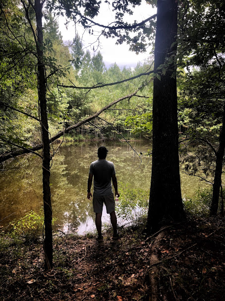
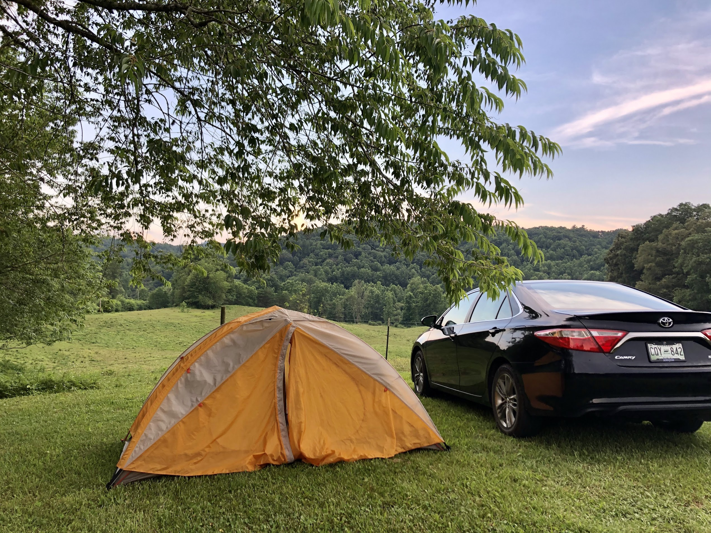
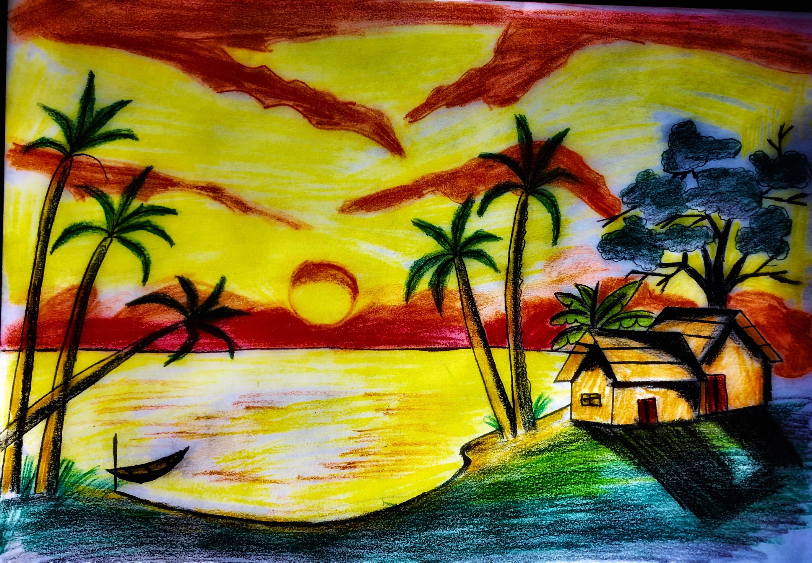

A glimpse into my favorite pastimes and activities.
Sports
Football, table tennis, volleyball, and cricket keep me active and engaged.

Hiking
Exploring scenic trails helps me stay connected with nature.

Camping
Sleeping under the stars and embracing nature is an adventure I love.

Documentaries
Learning about history, cultures, and global events fascinates me.
Reading Books
Books open new worlds, expand my knowledge, and inspire creativity.

Drawing
Expressing emotions and creativity through art is a passion of mine.